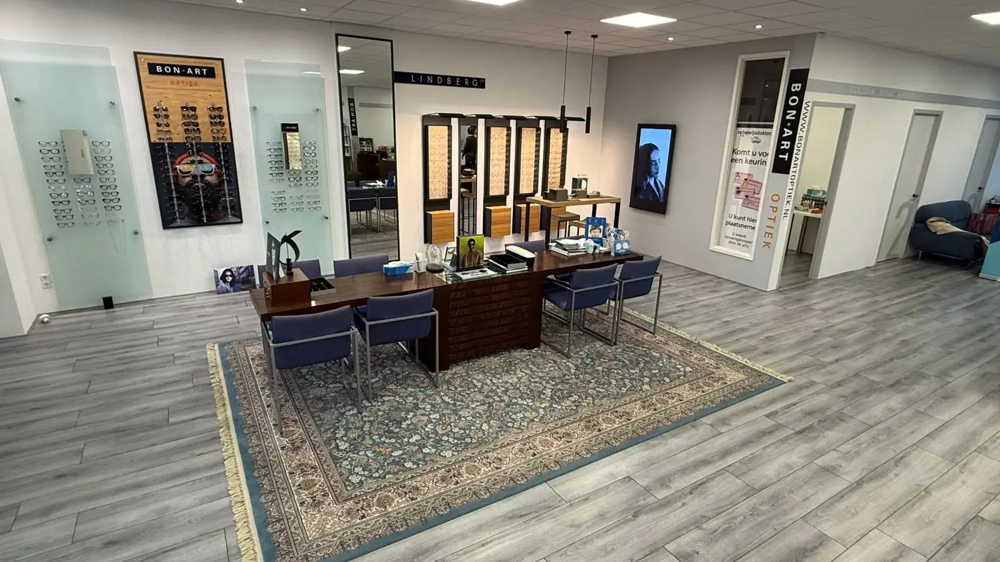
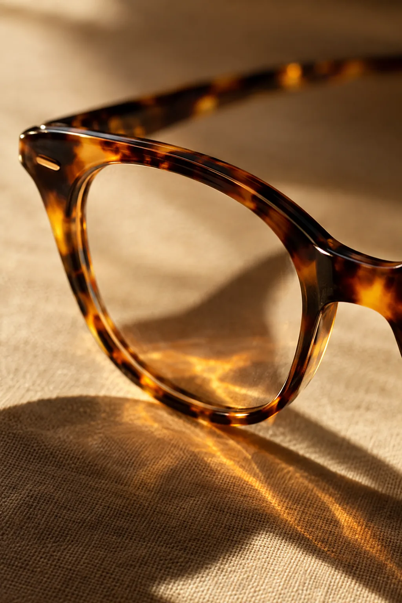
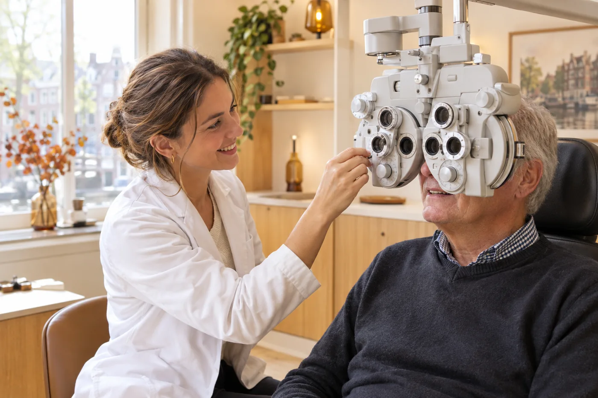

Oogonderzoek
Een grondig onderzoek van uw ogen, gericht op het vroeg opsporen van afwijkingen en oogziekten.
Oogzorg Stijl Aandacht
Bij Bon Art Optiek in Almere Poort nemen opticiens en optometristen de tijd voor uw ogen. U bent welkom voor een oogonderzoek, een nieuwe bril of contactlenzen, en ook wanneer uw huisarts, oogarts of andere zorgverlener u naar ons doorverwijst.
Welkom
Bon Art Optiek is sinds 2004 een allround centrum voor oogzorg en oogmode. Wij onderzoeken en beoordelen uw oogklachten en bepalen samen met u of verder onderzoek of behandeling door de oogarts nodig is.
Gastvrijheid zit in onze manier van werken. Dat merkt u zodra u binnenkomt: wij ontvangen u rustig, nemen plaats aan de adviestafel, luisteren eerst en leggen alles uit in heldere woorden. Zo kunt u zelf goede keuzes maken voor de gezondheid van uw ogen.
In onze winkel werken opticiens, optometristen en klantadviseurs samen. Samen zorgen zij voor een zorgvuldig onderzoek en een bril of lenzen die bij u passen.

Oogzorg
U kunt bij ons terecht voor meer dan een bril. Wij werken met geavanceerde meetapparatuur en nemen de tijd voor iedere vraag.
Een grondig onderzoek van uw ogen, gericht op het vroeg opsporen van afwijkingen en oogziekten.
Wazig zien, hoofdpijn, vermoeide ogen of dubbelzien? Wij zoeken de oorzaak en bespreken met u of de oogarts nodig is.
Een nauwkeurige meting bij dubbelzien of als uw ogen niet goed samenwerken. De basis voor comfortabel zien.
Nazorg en controles na een ooglaserbehandeling, dicht bij huis en in overleg met uw behandelaar.
Advies over en aanpassing van hulpmiddelen, zodat u zo zelfstandig mogelijk blijft doen wat u belangrijk vindt.
Monturen, zonnebrillen, multifocale glazen, contactlenzen en oogdruppels, met persoonlijk advies.
Bon Art Optiek was een van de eerste optiekzaken in Nederland die nieuwe, geavanceerde apparatuur inzette om oogziekten op te sporen.
Voor wie
Almere is een stad van jonge gezinnen, een groeiende groep senioren en inwoners met veel verschillende achtergronden. Wie u ook bent: wij nemen de tijd voor u.
01
Goed zien helpt kinderen bij leren, sporten en spelen. Wij denken met ouders mee over de ogen van het hele gezin. [Te bevestigen: vanaf welke leeftijd meten wij kinderogen?]
Afspraak voor het gezin02
Minder scherp zien, moeite met lezen of toe aan een multifocale bril: wij onderzoeken rustig, leggen alles helder uit en adviseren over hulpmiddelen als dat nodig is.
Afspraak maken03
Bent u doorverwezen door uw huisarts, oogarts of een andere zorgverlener? Neem uw verwijzing mee. Wij stemmen het vervolg waar nodig af met uw verwijzer.
Afspraak na verwijzingWij helpen u in het Nederlands, [te bevestigen: Engels, Perzisch, …].

Oogmode
Een goede bril begint met een nauwkeurige meting en eindigt met een montuur waarin u zich prettig voelt. Onze klantadviseurs kijken met u naar uw gezicht, uw dagelijks gebruik en uw budget.
Werkwijze
Online, via WhatsApp, telefonisch of per e-mail. Ook op maandag en zaterdag, en in overleg buiten onze openingstijden.
Wij luisteren eerst: welke klachten of wensen heeft u, en heeft u een verwijzing? Zo weten wij welk onderzoek nodig is.
Wij onderzoeken uw ogen zorgvuldig en bespreken de uitkomst in begrijpelijke taal.
Een bril, lenzen, een hulpmiddel of een verwijzing naar de oogarts: u weet altijd wat de volgende stap is. Ook daarna blijven wij voor u bereikbaar.
Voor zorgverleners
Huisartsen, oogartsen, apothekers en andere zorgverleners in Almere en omgeving verwijzen patiënten naar Bon Art Optiek. Dat vertrouwen waarderen wij. Uw patiënt krijgt bij ons een zorgvuldig onderzoek en een heldere uitleg, en u wordt betrokken bij het vervolg.
Veilig verwijzen. Medische gegevens ontvangen wij graag via [te bevestigen: Zorgmail-adres / ZorgDomein]. Stuur geen medische gegevens via gewone e-mail. AGB-code: [AGB-code].

Wij vinden het belangrijk dat u de informatie begrijpt die wij geven. Dan kunt u zelf de beste keuzes maken voor de gezondheid van uw ogen.
Afspraak maken
Van dinsdag tot en met vrijdag bent u welkom van 10.00 tot 17.00 uur. Op maandag en zaterdag zijn wij op afspraak voor u open. Ook buiten deze tijden is een afspraak mogelijk. Kies zelf hoe u contact opneemt.
| Maandag | Op afspraak open |
|---|---|
| Dinsdag | 10.00 – 17.00 |
| Woensdag | 10.00 – 17.00 |
| Donderdag | 10.00 – 17.00 |
| Vrijdag | 10.00 – 17.00 |
| Zaterdag | Op afspraak open |
| Zondag | Gesloten |
Een afspraak buiten openingstijden is mogelijk.
Maak een afspraak via de website, WhatsApp of telefoon en vertel ons wie u heeft doorverwezen. Neem uw verwijzing mee naar de afspraak. Waar nodig stemmen wij het vervolg af met uw verwijzer.
Voor een oogmeting, een bril of contactlenzen heeft u geen verwijzing nodig. Heeft u wel een verwijzing, neem die dan mee.
Dat hangt af van uw zorgverzekering en de reden van het onderzoek. Vraag het ons gerust als u een afspraak maakt; wij denken graag met u mee.
Ja. Op maandag en zaterdag zijn wij op afspraak open, en ook op andere momenten vinden wij in overleg vaak een passende tijd.
Natuurlijk. Klanten en patiënten uit heel Almere en omgeving zijn van harte welkom aan de Duitslandstraat 85.
In het Nederlands en [te bevestigen]. Neemt u gerust iemand mee die voor u kan vertalen.
Oogzorg Stijl Aandacht
Aan de Duitslandstraat 85 in Almere Poort.
Maak een afspraak